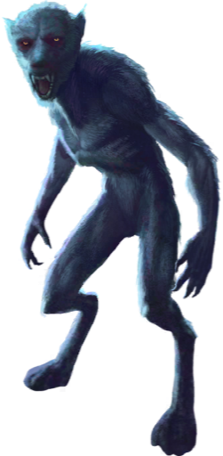
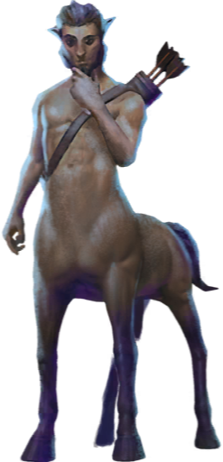
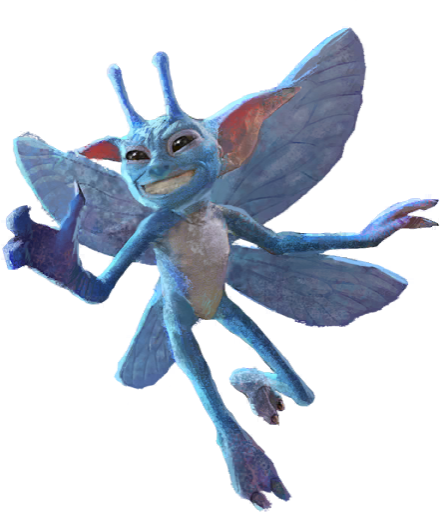
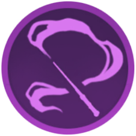
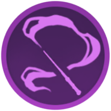

Page 1: Oddities I
Werewolf
A werewolf is a human being who transforms into a wolf during the full moon. While a bite from a werewolf in wolf form passes on the lycanthropy to its victim, an attack from an untransformed werewolf has relatively minor side effects.
Return to: St. Mungo's Hospital

Brown Centaur
Centaurs are half-human, half-horse creatures that are gifted in Divination. They are proud and territorial by nature, and have an aversion to being “used” by wizardkind in any capacity, as it is seen as an insult and betrayal of their kind.
Return to: Argos, Greece

Pixie
Pixies are small, mischievous flying creatures with blue skin that adore practical jokes and tricks. They are incredibly strong, able to lift people off of the ground by themselves.
Return to: Hogwarts Defence Against the Dark Arts Classroom, 1992

 
